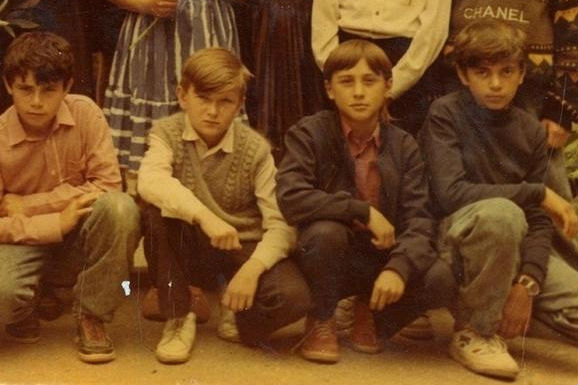
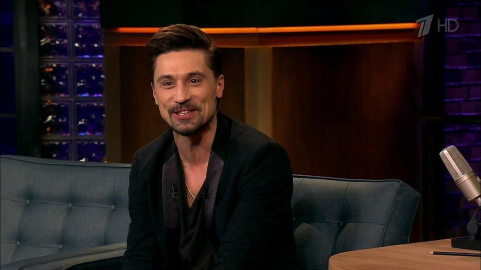
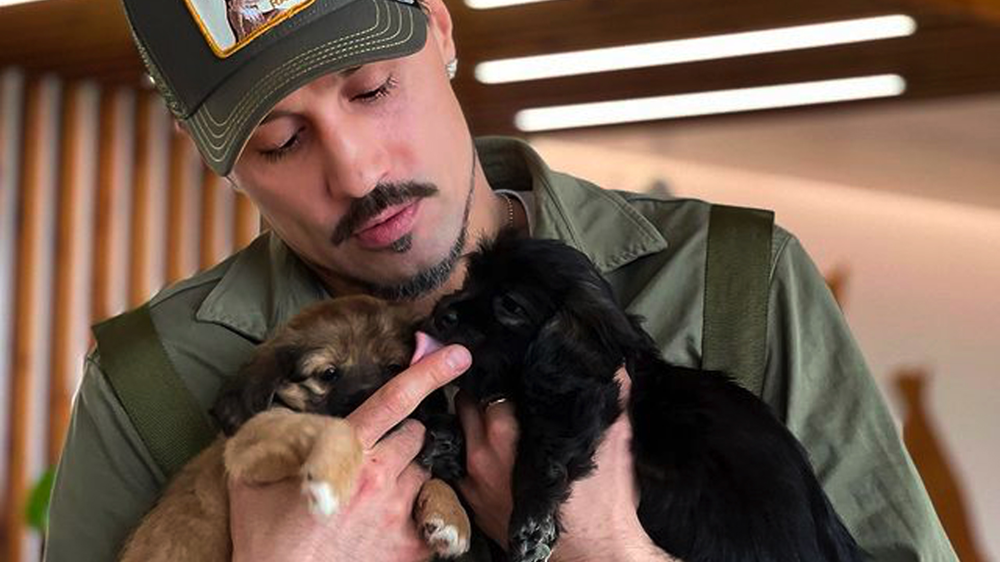
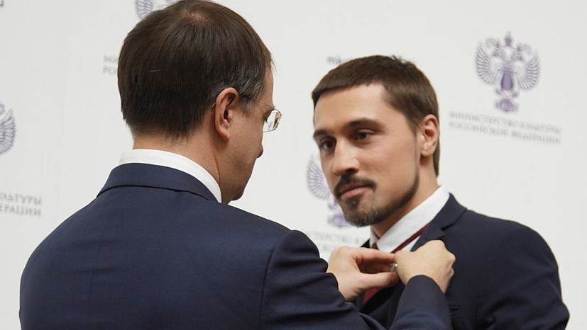

Главная | Общая информация | История | Дискография | Фильмография | Источники | Заказать Диск | Контакты
Дима Билан (настоящее имя — Виктор Белан) родился 24 декабря 1981 года в Усть-Джегуте, Карачаево-Черкесия. Учился в музыкальной школе по классу аккордеона, участвовал в конкурсах и фестивалях ещё школьником. После переезда в Москву поступил в училище имени Гнесиных на академический вокал, позже учился в ГИТИСе. Дебют состоялся в 2002 году на «Новой волне» в Юрмале, где он занял четвёртое место с песней «Бум». Первый альбом «Я ночной хулиган» вышел в 2003 году и принёс ему всероссийскую известность.

Билан несколько сезонов был наставником в шоу «Голос» и «Голос. Дети». Участвовал во множестве телепроектов — от «Евровидения» до танцевальных и музыкальных программ, выступал в жюри «Новой волны». В кино дебютировал главной ролью в короткометражке «Король шпаг» (2005), а затем снялся в фильме «Герой» (2018). Также озвучивал персонажей мультфильмов и появлялся в рекламных кампаниях крупных брендов. Его клипы неоднократно получали награды как лучшие в музыкальных премиях страны.

Певец развивает собственный бренд одежды и другие предпринимательские проекты. Сотрудничает с благотворительными фондами, поддерживает детские программы и регулярно участвует в добрых акциях. Был послом доброй воли и занимался просветительскими инициативами, связанными с музыкой и творчеством. Активно продвигает российскую культуру на международной арене через гастроли и медийные проекты. Также инвестирует в сферу развлечений и медиапроизводство.

Билан холост, детей у него нет, о личной жизни говорит сдержанно и редко называет своих избранниц публично. Певец признавался, что в юности пережил сильную первую любовь, что вдохновило его на написание песен. Он дружит с семьёй и часто приезжает в родную Карачаево-Черкесию. В свободное время увлекается спортом, предпочитает бег, плавание и здоровый образ жизни. Также любит путешествия и активно делится ими в социальных сетях.
В 2006 году Билан занял второе место на «Евровидении» с песней «Never Let You Go». В 2008-м он принёс России первую в истории победу на этом конкурсе с песней «Believe». Многократный обладатель премий «Золотой граммофон», «МУЗ-ТВ», RU.TV и World Music Awards. Получил звания заслуженного артиста Кабардино-Балкарии и заслуженного артиста Чеченской Республики. Его альбомы и синглы регулярно возглавляли российские чарты, а концерты собирают аншлаги по всей стране.

© Все права защищены. А.Д. Кобелева. ЭФЦ331-1. 2026